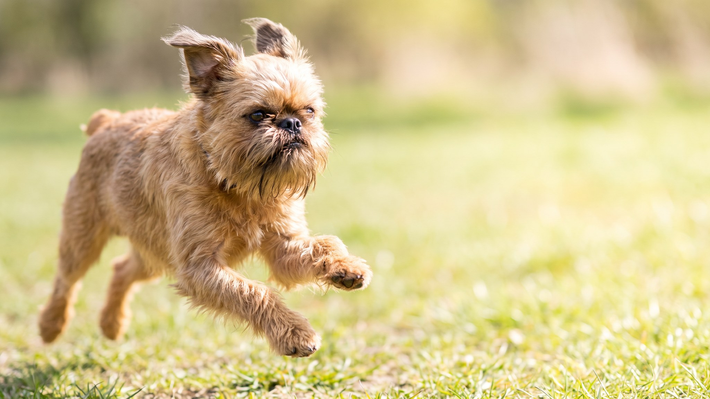

Брюссельский гриффон весит около 3–5 кг, но смотрит на вас так, словно уверен, что командует квартирой. «Человеческое» выражение морды, приплюснутая мордочка и жёсткая торчащая борода делают его мгновенно узнаваемым. Порода поглощает внимание хозяина целиком и не прощает, когда его нет рядом. Разбираем, с чем придётся считаться.
🐾 Ваш питомец — брюссельский гриффон?
Заведите профиль в AnimaLife: приложение запомнит породу, возраст и вес и будет подсказывать по уходу именно для неё. Вопросы AI-ветеринару — круглосуточно и бесплатно.
Завести профиль → Завести в MAX →
У вас iPhone? AnimaLife есть в App Store
Гриффоны прилипают к хозяину. Буквально. Порода получила прозвище «велкро-дог» за то, что следует за владельцем по всей квартире и тяжело переносит долгое одиночество. Восемь часов без хозяина для гриффона не норма: тревога выражается в скулеже, деструктивном поведении и отказе от еды.
Порода подходит людям, которые работают из дома или берут собаку с собой. Для хозяев с полным рабочим днём вне дома гриффон будет страдать.
Брюссельский гриффон относится к брахицефальным породам: приплюснутая морда и укороченный череп влияют на дыхание. Здоровый гриффон дышит вполне сносно в обычных условиях, но жара и высокая физическая нагрузка дают нагрузку на дыхательную систему быстрее, чем у большинства собак.
Гриффоны бывают двух типов по шерсти: жёсткошёрстные (грубая, жёсткая шерсть с бородой) и гладкошёрстные (брабансон). Жёсткошёрстные не линяют почти совсем, но шерсть требует тримминга два раза в год: стричь её ножницами нельзя, иначе структура меняется.
Гриффон хорош для людей, которые хотят настоящего компаньона в городской квартире. Он не требует поля и дальних походов, но требует постоянного присутствия хозяина. Порода легко обучается базовым командам, ценит игры дома и охотно осваивает трюки.
Порода не подходит: семьям с маленькими детьми до 5–6 лет, людям с полным рабочим днём вне дома без возможности взять собаку с собой, тем, кто плохо переносит постоянный собачий «надзор» за своими делами.
🐾 У вас брюссельский гриффон?
AnimaLife соберёт уход под породу: к каким болезням есть склонность, что проверять по возрасту, чем кормить и когда пора к врачу. Бесплатно, прямо в мессенджере.
Собрать план ухода → Собрать в MAX →
У вас iPhone? AnimaLife есть в App Store
🐾 Понравился разбор?
Подпишитесь на канал — каждый день разбираем по одному тревожному симптому у кошек и собак: что в пределах нормы, а когда пора к врачу. Подпишитесь, чтобы не пропустить разбор, который может спасти здоровье вашего питомца.
Материал носит информационный характер и не заменяет очную консультацию ветеринара.